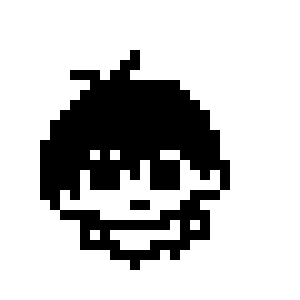

hi, I'm Vrix.
student. reader. someone who likes building tiny things on the internet.
about
I'm a student somewhere in the world, currently spending most of my time on code, math, and things I read in the margins of textbooks.
This site is a small corner of the internet I made by hand. The voxel up there is real Three.js — give it a drag.
things I'm into
- code
- reading
- math
- writing
- science
work
say hi
the easiest way is email. or find me on the platforms above. I read everything, eventually.